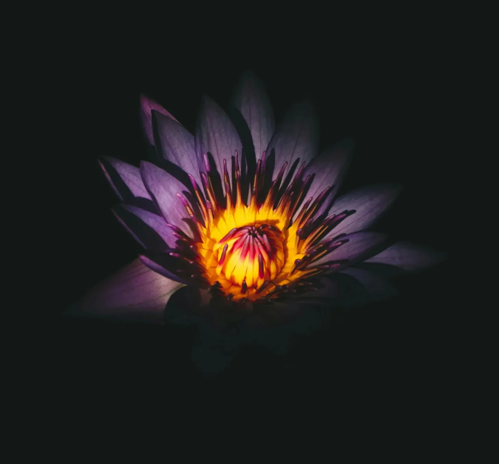

내 여자친구가 수련으로 변한 후, 나는 그녀가 그 이유를 설명해주기를 기다리며 식물원에서 밤을 보내기 시작했다.
[After my girlfriend turned into a water lily, I started spending my nights at the botanical garden, waiting for her to explain why.]
작은 라디오에서 흘러나오는 재즈 - 빌 에반스의 “피스 피스” - 가 잔잔히 울리는 가운데, 나는 수련의 보라색 꽃잎이 달빛을 받아 마치 오래된 꿈의 파편처럼 반짝이는 것을 지켜보았다. 어느 날 아침 “나는 수련이 되기로 했어. 이해해 주길 바라.” 라는 쪽지를 발견한 지 3주가 지났다. 악보처럼 정교한 그녀의 필체는 여전히 한 획 한 획이 신중했다.
[The jazz from the small radio played softly—Bill Evans’ “Peace Piece"—while I watched the water lily’s purple petals catch moonlight like fragments of an old dream. Three weeks had passed since the morning I woke up to find a note that read: "I’ve decided to become a water lily. Please understand.” Her handwriting was precise as always, each stroke deliberate as sheet music.]
마일스라는 세 발 달린 고양이를 키우는, 중절모를 쓴 나이 든 경비원이 영업 시간 이후에 나를 들여보내 주었다. 그는 질문 한 번 하지 않고, 그저 고개를 끄덕이며 내 휴대용 라디오에서 새어 나오는 재즈 스탠다드에 맞춰 흥얼거렸다.
[The night guard, an elderly man who wore a bowler hat and kept a three-legged cat named Miles, let me in after hours. He never asked questions, just nodded and hummed along to whatever jazz standard leaked from my portable radio.]
“어떤 변신들은 다른 것들보다 더 이해가 되지,” 그가 마일스의 귀 뒤를 긁어주며 한번 말했다. “내 아내는 87년에 구름이 됐어. 아직도 비 오는 날이면 찾아오곤 하지.”
[“Some transformations make more sense than others,” he said once, scratching Miles behind the ears. “My wife became a cloud in ‘87. Still visits on rainy days.”]
수련은 마치 우리가 도쿄 타워에서 일출을 봤던 때처럼 주황빛과 금빛의 타오르는 태양같은 중심부에서 안쪽으로 빛났다. 바람도 없는데 꽃잎들이 살짝 움직였고, 보라색 가장자리는 마치 무언가를 말하려는 입술처럼 떨렸다. 그녀가 새벽 2시에 피아노를 연습하곤 했던 때가 떠올랐다. 지금 이 꽃잎들이 빌 에반스에 맞춰 흔들리는 것처럼, 그때는 그녀의 손가락이 건반 위에서 춤췄었다.
[The lily glowed from within, its center a burning sun of orange and gold, like the time we watched sunrise from Tokyo Tower. The petals moved slightly, even without wind, their purple edges trembling like lips about to speak. I remembered how she used to practice piano at 2 AM, her fingers dancing across keys the way these petals now swayed to Bill Evans.]
내 무릎 위에는 작은 메모장이 놓여있었고, 그곳엔 내가 결코 묻지 않을 질문들이 적혀있었다: 우리의 첫 데이트 때 입었던 그 드레스 때문에 보라색을 선택한 거니? 광합성은 네가 즉흥으로 연주하곤 했던 재즈 솔로 같은 느낌이니? 수련도 꿈을 꾸니?
[A small notepad sat on my lap, filled with questions I’d never ask: Did you choose purple because of that dress you wore on our first date? Does photosynthesis feel like the jazz solos you used to improvise? Do water lilies dream?]
세 발 달린 고양이가 절뚝거리며 다가와 내 발목에 몸을 비벼댔다. “그녀는 밤에만 피어요,” 경비원이 내 옆에 나타나며 말했다. “마치 세상이 조용해질 때 떠오르는 추억들처럼요.”
[The three-legged cat limped over, pressing against my ankle. “She only blooms at night,” the guard said, appearing beside me. “Like memories that surface when the world goes quiet.”]
나는 심장처럼 뛰는 금빛 중심부를 바라보며 고개를 끄덕였다. 어떤 밤에는 연못에서 피아노 소리가 들리는 것 같았지만, 오늘 밤에는 잉어가 튀는 잔잔한 소리와 절정에 달한 빌 에반스의 연주만이 있을 뿐이었다.
[I nodded, watching the golden center pulse like a heart. Some nights, I swore I could hear piano notes rising from the pond, but tonight there was only the soft splash of koi and Bill Evans reaching the climax of his piece.]
경비원이 중절모를 고쳐 썼다. “있잖아요, 젊은이, 때로 사람들은 우리를 떠나기 위해서가 아니라 다른 존재 방식을 보여주기 위해 변하는 거예요. 내 구름이 된 아내가 가르쳐줬죠 - 비는 슬픈 게 아니라 하늘이 땅에 닿으려 손을 뻗는 거라고.”
[The guard adjusted his bowler hat. “You know, son, sometimes people transform not to leave us, but to show us a different way of being. My cloud-wife taught me that rain isn’t sad—it’s just the sky reaching down to touch the earth.”]
수련의 꽃잎이 더 넓게 펴지면서 패턴 속의 패턴들, 그녀가 재즈 이론을 설명하던 방식을 떠올리게 하는 기하학적 무늬들이 드러났다 - 그들만의 현실 속에서 완벽하게 이해되는 복잡한 구조들. 주황빛 중심부는 마치 신호나 약속처럼 더 밝게 빛났다.
[The lily’s petals stretched wider, revealing patterns within patterns, geometries that reminded me of the way she used to explain jazz theory—complex structures that somehow made perfect sense in their own reality. The orange center burned brighter, like a signal or a promise.]
나는 주머니에 손을 넣어 그녀가 쪽지와 함께 남긴 작은 종이 연꽃을 만졌다. 계속 만지작거려서 종이는 부드러워졌지만, 마치 사라지기를 거부하는 기억처럼 여전히 그 모양을 유지하고 있었다.
[I reached into my pocket and touched the small origami lotus she’d left with her note. The paper had softened from constant handling, but still held its shape, much like memories that refuse to fade.]
“아마도,” 이미 마일스와 함께 멀어져 간 경비원을 향해 나는 말했다, “어떤 질문들은 묻는 것만으로도 스스로 답을 하는 걸지도 모르겠어요.”
[“Maybe,” I said to the guard, though he’d already wandered off with Miles, “some questions answer themselves just by being asked.”]
수련은 계속해서 밤의 춤을 추었고, 각각의 꽃잎은 고요한 교향곡의 건반이었다. 나는 빌 에반스를 한 번 더 틀고 아침을 기다렸다. 그녀가 이유를 절대 설명하지 않더라도, 그녀가 나에게 밤을 듣는 새로운 방법을 선물했다는 것을 알면서.
[The water lily continued its nocturnal dance, each petal a key in a silent symphony. I played Bill Evans one more time and waited for morning, knowing that even if she never explained why, she’d given me a new way to listen to the night.]